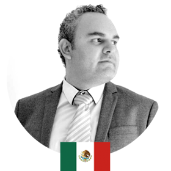
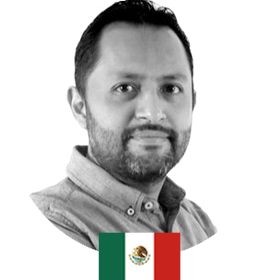
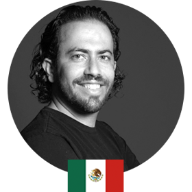
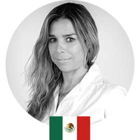
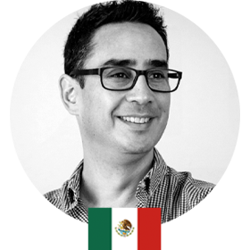

• • Mentoring • •
“Worst Fails
del Marketing Digital”
Evento Online Gratuito
Hemos reunido a 6 de los más destacados profesionales con reconocimiento internacional y muchos años de trayectoria quienes compartirán, de acuerdo a su experiencia, lo que ellos consideran algunos de los peores fails en el Marketing Digital, así como las consecuencias de los mismos.
Acompáñanos en este ciclo de mentorías totalmente gratuitas y conoce de viva voz estas experiencias que seguro te resultarán de gran utilidad para no cometer los mismos errores.
RESERVA TU LUGAR
22, 23 y 24 de junio - 18:30 Hrs. Hora México
-

Edgar Rábago
Maestro en Marketing por la Universidad de Birmingham en Inglaterra y maestro en Administración Empresarial con especialidad en Comercio Electrónico por parte del ITESM. Se ha desempeñado en diversos cargos como Gerente Administrativo en Arekolor, Director Comercial en Ilustra Internacional, fundador y actual director de marketing en Sublime Inspiración Aplicada, Director de Cuentas en Murphy Comunicación, Estratega Senior en la American Marketing Association Capítulo CDMX, entre otros. Su especialidad: Marketing Digital.
-

Juan Carlos Tavera
Empresario y Consultor en Marketing Digital con más de 15 años de experiencia en distintas agencias de publicidad. Fundador y Director de la agencia Digital PLAM. y Fundador de TAVWORKING, coworking ubicado en la Roma CDMX. Ha impartido diversos diplomados y cursos de Marketing. Actualmente es consultor en distintas agencias de publicidad. Su especialidad: marketing y desarrollo UX Web.
-

Felix Ríos
Licenciado en Mercadotecnia egresado de ITESM Chihuahua. Creador y Director General de Néctar Negocios, agencia de mercadotecnia. Ha impartido conferencias y talleres en más de 26 estados del país. Apasionado de la mercadotecnia, en especial por los casos de tendencias digitales. Docente en diplomados en varias instituciones reconocidas como el ITESM, Ibero, UP y UNAM. Su especialidad: Estrategia Digital.
-

Jack Ades
Presidente y General Manager de Capital Digital. Con 20 años de experiencia en marketing digital y branding ha colaborado con empresas de diferentes industrias como: Aeromexico, Samsung, AT&T, Andrea, ITAM, Alsea, Bayer, Mead Johnson, entre otras. Recibió el Big Idea Chair Award de Yahoo, un Effie de Oro y el premio CNN Expansión a lo mejor del e-business gracias a la campaña “Lo que quiero hacer antes de morir”. Su especialidad: Marketing Digital.
-

Giane Carvajal
Su experiencia se centra en desarrollar proyectos de comunicación para empresas y medios. Especialista en comercialización de publicidad y contenidos para clientes de consumo B2B. Actualmente es VP de Revenue: Capital Digital como responsable de estrategia comercial en México y América Latina para las marcas digitales de Capital Digital, Chilango, Sopitas, Pictoline, Unocero, DeMemoria y creación de productos de publicidad, media y experiencias. Su especialidad: Comunicación, ventas y desarrollo de negocios.
-

Hans Hatch
Con 20 años de experiencia profesional, se ha convertido en uno de los influenciadores en temas de marketing digital, negocios, publicidad, innovación y tecnología. Consultor de negocios, tecnologías digitales y redes sociales; asesora y trabaja en las áreas de comunicación integral para varias de las marcas más importantes de México. Fundador y columnista de la Revista Digital Soy Marketing y Fundador y Director de MyMuuk- Influencer Marketing, así como de la Agencia de Marketing Hatch Co. Su especialidad: Marketing Digital.
Incluye
- Workbook
- Acceso a grupo privado de facebook
- Acceso a grupo de Whatsapp privado
- Certificado de descuento al Diplomado Internacional de Marketing Digital
Para participar, registrate aquí.